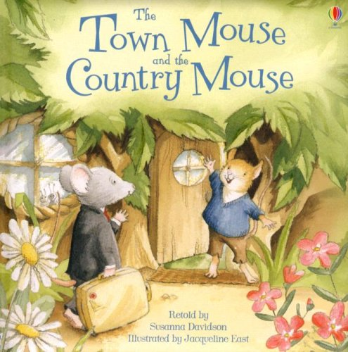

A Town Mouse and A Country Mouse
 A Town Mouse and a Country Mouse were friends. The Country Mouse one day invited his friend to come and see him at his home in the fields. The Town Mouse came and they sat down to a dinner of barleycorns and roots the latter of which had a distinctly earthy flavour.
The flavour was not much to the taste of the guest and presently he broke out with “My poor dear friend, you live here no better than the ants. Now, you should just see how I fare! My larder is a regular horn of plenty. You must come and stay with me and I promise you shall live on the fat of the land."
So when he returned to town he took the Country Mouse with him and showed him into a larder containing flour and oatmeal and figs and honey and dates.
The Country Mouse had never seen anything like it and sat down to enjoy the luxuries his friend provided. But before they had well begun, the door of the larder opened and some one came in. The two Mice scampered off and hid themselves in a narrow and exceedingly uncomfortable hole. Presently, when all was quiet, they ventured out again. But some one else came in, and off they scuttled again. This was too much for the visitor. "Good bye," said he, "I'm off. You live in the lap of luxury, I can see, but you are surrounded by dangers whereas at home I can enjoy my simple dinner of roots and corn in peace."
Moral : Safety is the first importance.
|